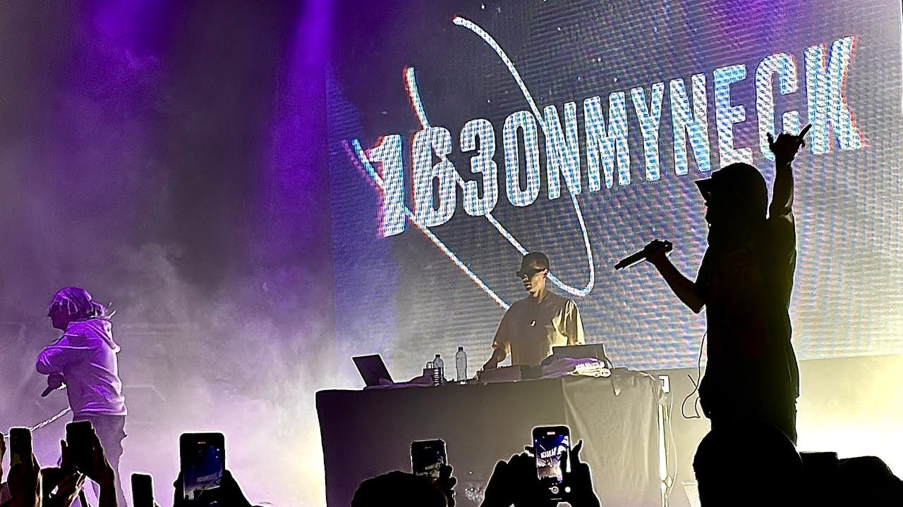

Конфуз на концерте 163onmyneck: рэпер шокировал публику неловким моментом
Во время исполнения одной из своих песен 163 внезапно издал громкий звук, который все присутствующие восприняли как "пук". Это произошло прямо перед микрофоном, и звук был отчетливо слышен всем зрителям.
Реакция публики была разнообразной: кто-то смеялся, кто-то смутился, а некоторые даже покинули зал. Сам 163 никак не прокомментировал произошедшее, продолжив выступление без заминки.
После концерта в соцсетях начали появляться мемы и шутки на тему этого инцидента. Многие фанаты поддержали рэпера, отмечая, что подобные моменты делают концерты еще более живыми и настоящими. Некоторые, однако, выразили разочарование и критику, считая, что такое поведение неуместно на сцене.
Концертный менеджер 163 подтвердил, что произошел непредвиденный случай, но подчеркнул, что артист всегда стремится к высокому качеству выступлений и приносит свои извинения тем, кого этот момент мог оскорбить.
Независимо от реакции зрителей, этот инцидент добавил еще одну забавную страницу в историю концертной деятельности 163, став поводом для множества шуток и комментариев в интернете.
Сам же рэпер заявил, что это "реальное тайп щит свага дерьмицо".

Scally Milano оказался в центре скандала после конфликта в метро
Известный российский рэпер Scally Milano стал объектом общественного внимания после инцидента в московском метро. По сообщениям очевидцев, музыкант отказался уступить место пожилой женщине, несмотря на ее просьбы.
Событие произошло утром на станции метро "Комсомольская", когда пожилая женщина обратилась к Scally Milano с просьбой уступить ей место. Однако рэпер проигнорировал её просьбу и продолжил сидеть.
Когда конфликт стал набирать обороты, другие пассажиры вмешались и попросили Scally Milano проявить уважение к старшему поколению. Вместо того чтобы извиниться, музыкант начал кричать и ругаться
После выхода из вагона Scally Milano почувствовал себя крайне неловко и начал имитировать кошачье мяуканье, пытаясь снять напряжение. Его действия вызвали волну насмешек со стороны окружающих.
Scally Milano пока не прокомментировал ситуацию, однако его менеджеры уже начали работу над устранением последствий скандала.
Репер Я3 зажёг на вечеринке Дмитрия Солдатова
Вчера вечером популярный видеоблогер Дмитрий Солдатов организовал грандиозную вечеринку, главным событием которой стало выступление рэп-исполнителя Я3. Музыкант представил публике свои свежие треки, а также исполнил хиты, которые уже стали настоящими хитами среди поклонников.
Атмосфера мероприятия была наполнена энергией и драйвом, благодаря мощному вокалу и харизматичному выступлению Я3. Гости вечеринки не могли устоять на месте – танцы и веселье продолжались до самого утра.
"Это был невероятный вечер! Я3 показал себя настоящим профессионалом сцены," – поделился впечатлениями Дмитрий Солдатов после концерта. "Его музыка заряжает позитивом и энергией, и я рад, что смог пригласить его к себе."
Концерт Я3 стал ярким завершением вечера, оставив незабываемые впечатления у всех присутствующих.
Рэпер DIZAND оказался в центре скандала после инцидента на вечеринке
Этот репер напердел в стеклянную банку а после вынюхал содержимое и крикнул "ух бля мальва!"
.webp)